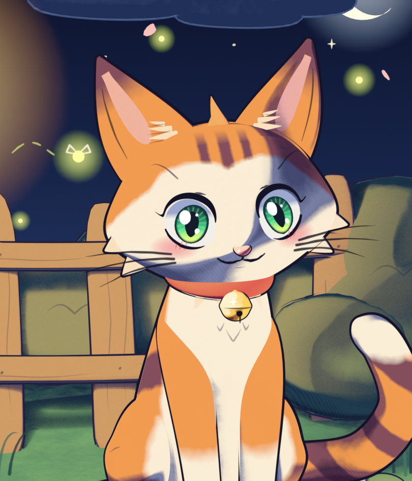

Disponible para adopciónMikan
Macho atigrado crema y naranja · 1 año y 4 meses
Llegó en febrero tras pasar semanas durmiendo bajo las bugambilias de la calle Tres Cruces. Le encanta salir al patio justo cuando encendemos la farola de la entrada: persigue luciérnagas en silencio, mueve su ovillo morado cerca de quien lee y nunca rechaza una caricia detrás de las orejas.
- Carácter
- Curioso, sereno y muy platicador al anochecer
- Convivencia
- Se lleva bien con otros gatos tranquilos y departamentos con malla
- Salud
- Esterilizado, esquema completo, prueba FeLV/FIV negativa